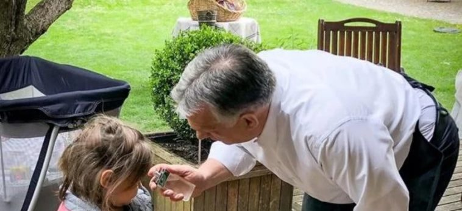

A húsvét a kereszténység legnagyobb ünnepe, a Krisztus-központú kalendárium központi főünnepe. Az Újszövetség szerint Jézus – pénteki keresztre feszítése után – a harmadik napon, vasárnap feltámadt. Kereszthalálával nem szabadította meg a világot a szenvedéstől, de megváltotta minden ember bűnét, feltámadásával pedig győzelmet aratott a halál felett. A valláson kívül is a tavaszvárás, a tavasz eljövetelének ünnepe is, amelyet március vagy április hónapban (a Hold állásának megfelelően) tartanak. A húsvétnak megfeleltethető az időben korábban kialakult zsidó vallási ünnep (héber nyelven pészah), amely az egyiptomi fogságból való szabadulás ünnepe, ezért nevezik a szabadság ünnepének (hág háhérut) is.
Jézus Jeruzsálembe vonulásának emlékünnepe a húsvét előtti, ún. virágvasárnap. A 6. századtól kezdve ekkor körmeneteket tartottak, ahol a pálma az időjárási viszontagságok mellett a különféle varázslatoktól is megvédett. Nálunk ezt a szentelt pálmát helyettesíti a barka. Megfigyelhető, hogy bár egyházi eredetű a barkaszentelés, de a népi hagyományokban felhasználták rontás ellen, gyógyításra, mennydörgés és villámlás elhárítására.
Sokfelé élt az a hiedelem, hogy szentelt barkát nem szabad bevinni a házba, mert akkor elszaporodnak a legyek és a bolhák, valamint egyéb rontásokat hozhat a házra. Azonban emellett jósló, rontás elleni szerepet is tulajdonítottak neki: a kert földjébe szúrt barkaág elűzi a férgeket, de éppenséggel a gyomorégés és a torokfájás ellen is kitűnő.
Virágvasárnapi jellegzetes szokás szerint egy szalmabábut többnyire menyecskeruhába öltöztettek. A kisze vagy más néven banya a tél, a böjt, a betegség megszemélyesítője, amelyet a lányok énekelve végigvittek a falun, majd pedig vízbe hajították vagy elégették. A nagyhéten belül a Húsvéti Szent Háromnapon (liturgikus nevén: Sacrum Triduum Paschale), azaz nagycsütörtökön, nagypénteken és nagyszombaton emlékezik meg a kereszténység Jézus Krisztus kínszenvedéséről, kereszthaláláról és feltámadásáról. Nagycsütörtök – Krisztus utolsó vacsoráját az Olajfák-hegyén, majd elfogatását és szenvedéseinek kezdetét idézi.
Tudtad, hogy idén a böjt február 17-én, szerdán kezdődött, és április 1-ig tart? A húsvét így sok család számára az áldozatvállalás időszakának a végét jelenti. Ez tükröződik a húsvéti ételek választékában is, az édes finomságok mellett a különféle módon elkészített hús játsza a főszerepet. Találkozhatunk húsvéti töltött hússal és sonkával, amely a legtöbb esetben a húsvéti menü főszereplője. Milyen húst érdemes választani?
